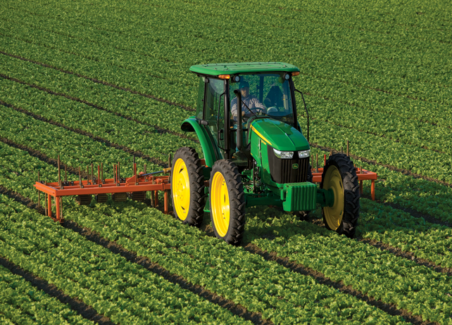
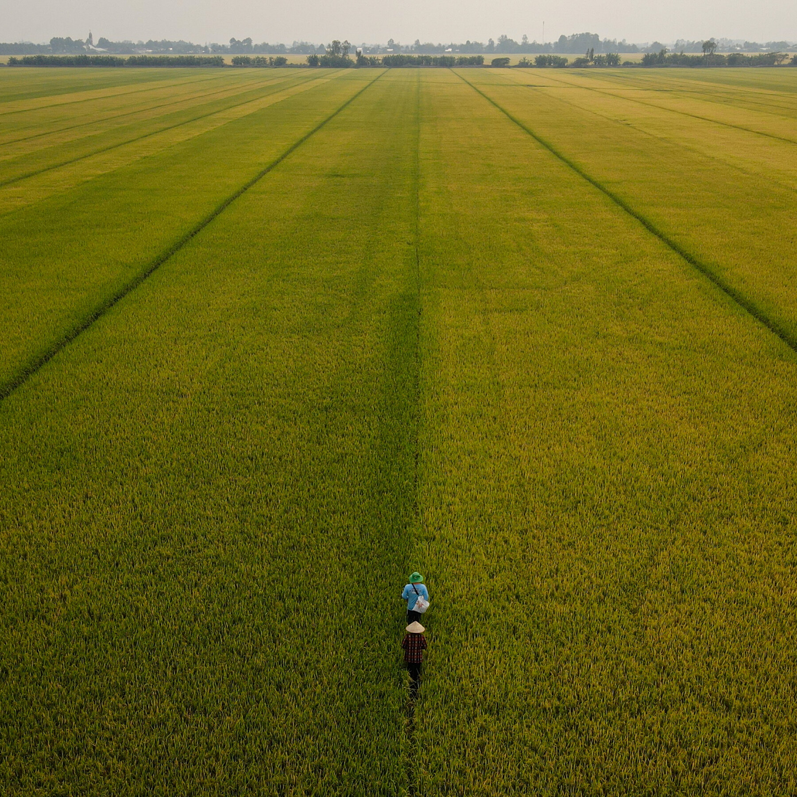

INTRODUCTION
INTRODUCTION
As reported by the United Nations, approximately 689 million of the world's 7.6 billion population (about 10%) had been living under $2 a day as of 2017 [1]. Since the 2020 COVID outbreak, that percentage has increased as well. Many factors go into poverty such as lack of education and healthcare. Another factor is agriculture, or lack of it, which many countries around the world use for support. For this paper, I will focus on the agricultural side of poverty by summarizing two articles that discuss technological solutions. I will then compare the two in how they help to achieve agricultural growth.
JOURNAL ARTICLES
The first article comes from the Harvard International Review journal written by Eric Li. In sub-Saharan Africa, the poverty percentage is 41%, and by 2030, 87% of the world's poor will be living within this region [2]. It's stated that within sub-Saharan Africa, "agriculture and poverty are inextricably linked," and historically, agricultural productivity growth has been responsible for 40 to 70 percent of poverty reduction for some countries [2]. With 20 to 40 percent of global crop production (49% in Africa) lost to pests each year, the use of genetically modified organisms (GMOs) could be useful as it allows for the creation of crops with pest and herbicide resistance as well as drought tolerance [2]. Additionally, about 31 million hectares (approximately 76 million acres) of African land go unirrigated [2]. With the implementation of small-scale irrigation technology (SSI) such as watering cans to automated water pumps, there is the potential to create 7.3 million hectares of irrigated land [2].
The second article comes from the Food Policy scientific journal written by Benedito Cunguara and Ika Darnhofer. Written in 2011, this article focuses on assessing the impact of agricultural technologies on household income in rural Mozambique. The article looks at how different agricultural technologies contribute to increasing household income. The first is the use of improved maize seeds, which are seeds that are better at capturing small amounts of fertilizer [3]. The second is the use of animal traction or draught power in agriculture, mainly for plowing [3]. The third technology is tractor mechanization which is essentially the use of tractors for more thorough, deeper, and timely tillage [3]. Finally, the fourth technology is improved granaries which refers to improving storage facilities that can prevent moisture damage and limit pest infestation [3].
COMPARE AND CONTRAST
Both articles take different approaches to agriculture. The first article discusses using GMOs to fight off pests. In fact, the use of GMOs have increased global agricultural production by about 350 million tons of corn [2]. The use of SSI technology is also talked about as it could create 7.3 million hectares of irrigated land and is more resource-efficient than the sub-Saharan African dam-based irrigation system [2]. The second article discusses four different technological improvements used in the agricultural field. After testing, they found that tractor mechanization improved total household income by 5% with animal traction reducing the income [3]. Both improved maize seeds and improved granaries had no significant impact on household income [3]. During this time, it should be mentioned that a widespread drought occurred in 2005 [3]. Technologies within the first article have their advantages but also contain drawbacks. For example, the SSI technology talked about previously would take an estimated $38 billion to irrigate those 7.3 million hectares [2]. Additionally, technologies in the second article dealt with a drought, which affected the harvesting quantities of that year [3].
CONCLUSION
In the end, for many countries, agriculture is undoubtedly linked to poverty. With just these two sources alone, many different technological options could be implemented to improve the agricultural state of countries. Still, these options do not come without their drawbacks. Nonetheless, as stated by Eric Li in the first article, "Increases in crop yields do not always translate into economic growth; without the necessary demand from consumers" [2]. Even if we can fix the agricultural state for every country, there is still much more to be done until we can completely wipe poverty away.
REFERENCES
[1] United Nations, "End poverty in all its forms everywhere," United Nations, 2021. [Online]. Available: https://unstats.un.org/sdgs/report/2021/goal-01/. [Accessed 18 October 2022].
[2] E. Li, "WINNING IN SUB-SAHARAN AFRICA'S AGRICULTURAL MARKET: AGRICULTURE, POVERTY, AND THE ROLE OF TECHNOLOGY," Harvard international review, vol. 41, no. 1, pp. 58-62, 2020.
[3] I. D. Benedito Cunguara, "Assessing the impact of improved agricultural technologies on household income in rural Mozambique," Food policy, vol. 36, no. 3, pp. 378-390, 2011.
Addendum
To start, I changed the font in which all my text would appear. After searching on dafont.com, I found a font called "Butler" in which I liked the style of. After applying this font to all the text, I adjusted the sizes of each paragraph and header as I liked. Any text with a <h1> tag would have a size of 50px, which <h2> tags would have 30px, and a paragraph would have 25px. The next change was fixing the linking error from the previous lab. I wanted each in-text citation to direct you towards the resources when clicked. This function did not work before, so I fixed this. A spacing between paragraphs and the next header/section was added to emphasize the change of a section, and a margin was added so that all the text would not rest directly on the side of the screen. Pictures were also added to the essay to give more of a visual element to it. A padding was also given to the pictures to separate them from the text aside it.